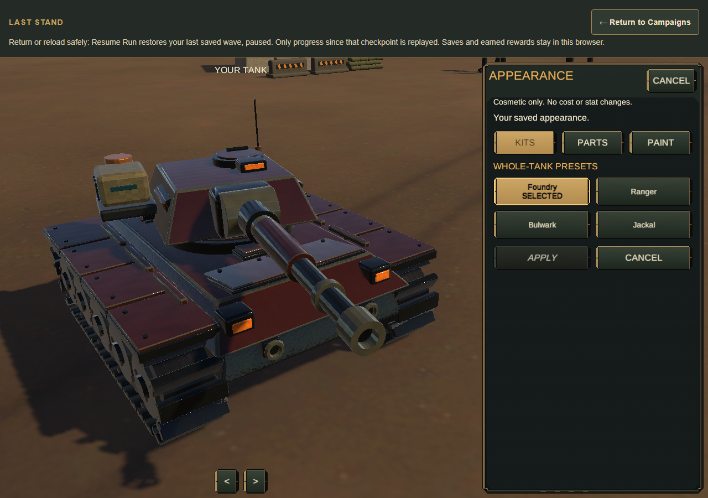
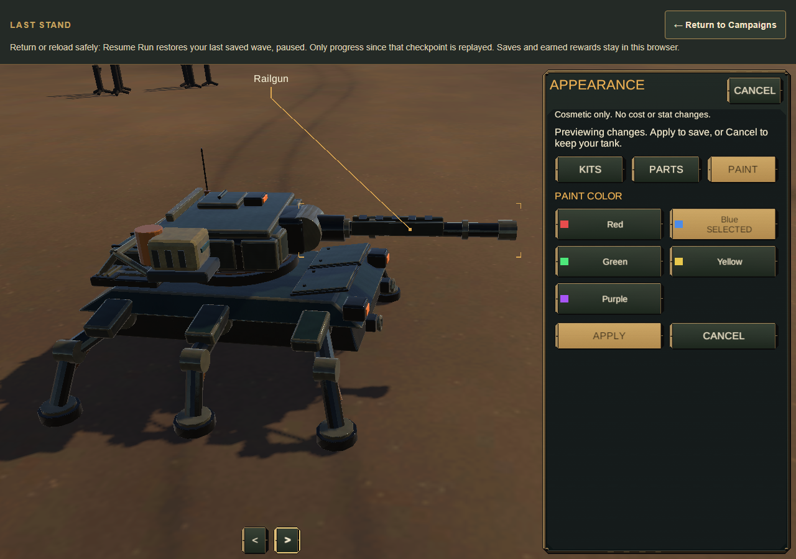
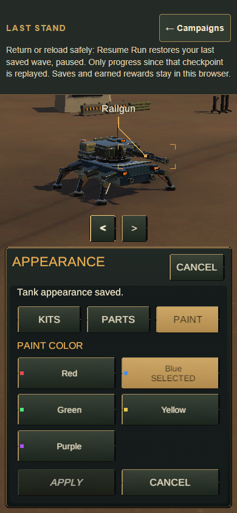
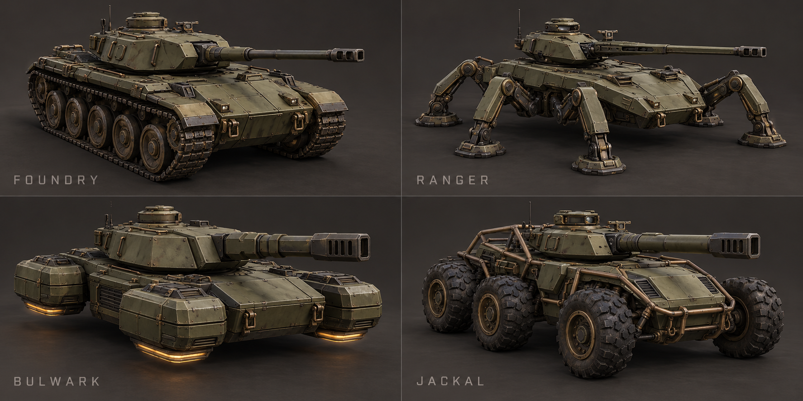
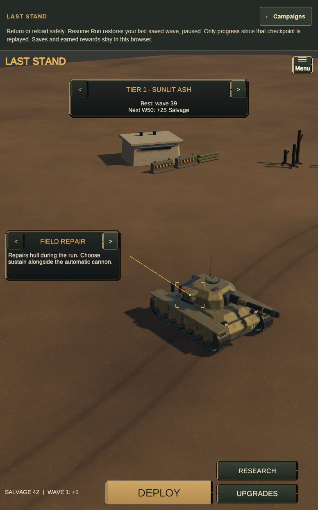

The garage now adapts the legacy game's free cosmetic kits to Last Stand's actual 3D tank. Appearance belongs to the player profile and travels with a portable backup. Combat fitting, damage, aim, hitboxes, prices and retained run rules remain separate.
From the garage, open Menu → Appearance. Kits selects a complete family; Parts mixes mobility, hull, turret and barrel; Paint changes armor color. The live tank previews each choice. Apply confirms the profile save. Cancel, Escape or leaving the page discards unapplied changes. Appearance editing is unavailable during combat; a saved resumable checkpoint can stay intact in the garage.
| Family | Mobility | Hull / turret / barrel identity |
|---|---|---|
| Foundry | Tracks | Armor Hull, Cupola, Cannon |
| Ranger | Spider Legs | Scout Hull, Sensor Pod, Railgun style |
| Bulwark | Hover | Siege Hull, Bunker, Siege Gun |
| Jackal | Dune Wheels | Raider Hull, Sensor Ring, Howitzer |
All 256 part combinations and the five legacy paints—red, blue, green, yellow and purple—are free. A cosmetic Railgun barrel does not equip the combat Railgun fitting.
The current original model source is ArtSource/LastStandTankKits_02.blend; its exported models, textures, materials and binding prefab are in Unity/Assets/TankKits02. The editable source retains named construction geometry and packed original textures. Tools/build_tank_kits.py authors a new output and refuses existing source/output paths. Export refinement must preserve the preceding draft and its receipt before replacing the current working draft.
The material set distinguishes armor, steel, edge metal, rubber, brass and optics. Original procedural base-color, normal and metallic/occlusion/smoothness maps accompany the model; no third-party mesh or texture was downloaded. Legacy family identities and labels are reused, while geometry and textures are newly authored. The legacy raster atlas is not shipped as a new texture.
LastStandTankKitImport.Prepare creates fresh Unity materials/prefabs; Validate checks imported geometry and the rig. LastStandTankSceneUpgrade.Prepare explicitly wires the saved production scene. Player builds never generate or rewrite that scene.
Unity imported all 256 assemblies below the 25,000 core-triangle target; the maximum is 18,804. Whole-family counts are Foundry 17,772, Ranger 13,596, Bulwark 13,340 and Jackal 14,084. Five combat fittings, the canonical muzzle and 16 cardinal aim/recoil/return checks remain valid. These are geometry and behavior measurements, not device frame-rate measurements.
LastStandTankVisuals swaps visual children under the persistent rig. TankPresentation still owns aim, recoil and camera framing. The same geometry-based callout component projects fitting and selected-part bounds. The shared modal host, chrome, scrolling and keyboard owners host the Appearance page.
The camera fits visible geometry to the available preview, including perspective depth and the portrait pane's offset. Positions are cached per shared mesh and fitting runs when the view or geometry changes. Only the 16 new core models enable CPU readback: their vertex/index buffers total approximately 6.44 MB, with up to 1.52 MB of cached positions, excluding Unity and array overhead. This bounded memory cost makes parts inspectable without clipping; target-device performance remains unmeasured.
Profile schema 7 adds a strict, allowlisted appearance record. Earlier profiles migrate to Foundry/red without changing their retained combat editions. The existing profile transaction, ownership, readback and backup mechanisms remain the sole persistence authority. A draft checks both saved appearance and profile replacement generation before Apply.
These screenshots come from the packaged WebGL game, with ordinary browser input. The first shows Foundry; the second mixes Ranger legs and barrel, a Jackal hull, a Bulwark turret and blue paint. The selected barrel's callout follows its projected geometry. The validation index binds the build, checks and remaining qualification.


Portrait places the same live preview above the shared scrolling controls. The saved status below follows a real Apply action.

The reference below was generated with OpenAI image generation for this sprint from an original description of the four families, interchangeable parts, olive armor, dark steel/rubber, brass accents and restrained wear. It is concept art, not an engine screenshot or a claim of visual acceptance.

The baseline below is an unmodified screenshot of the existing garage before this sprint. Current rendered comparison and verification results are recorded in the sprint validation record. Imported mesh and browser checks do not establish physical-device performance, audio, thermal/endurance behavior or owner art acceptance.
